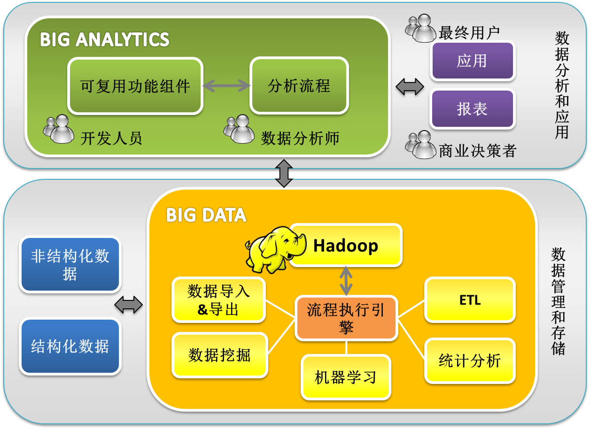
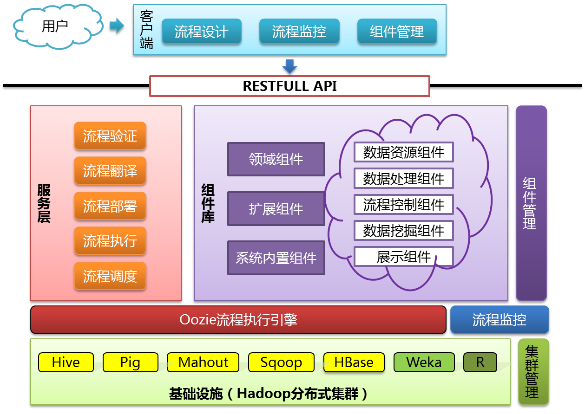

简介
Haflow是一个，以组件为设计单位的，具有拖拽式流程设计界面的，可以协同异构数据分析工具的，分布式的，服务化的，易用性高的，可扩展性强的，开放式的大数据分析服务平台。
从前端来看，开发人员通过拖拽和关联组件，完成整个分析流程的设计。开发人员还可以通过组件管理界面发布自定义的组件，或者导入一组面向领域的可复用组件。整个客户端体现很强的易用性和可扩展性。

从后端来看，大数据服务平台构建在分布式集群上，并且集成多种数据处理，分析和挖掘工具，并发地调度执行各个分析任务。前端通过调用后端系统提供的Restful API来完成前后台的通信。

从数据分析工程师的角度来看。该平台可以屏蔽各个系统和工具的异构性，降低数据分析的难度，加快信息提取的速度。
从企业成本的角度来看。首先，大数据分析平台可供多个用户同时向集群提交多个流程。通过对这些多个流程的调度，不仅可以降低流程的平均执行时间，并且可以极大地提高了集群的利用率。其次，拖拽式的开发极大的降低了对分析人员专业技能的要求，使得分析人员可以从算法编写，实验脚本编写等繁杂工作中抽离出来。帮助企业缩短决策的时间，改进决策的过程。
总之，大数据分析服务平台不仅可以缩短公司投资回报周期，同时也可以提高公司投资回报率。